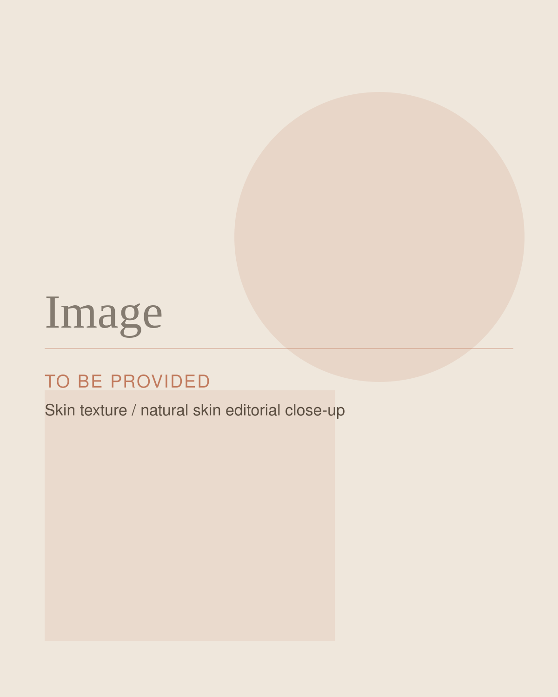
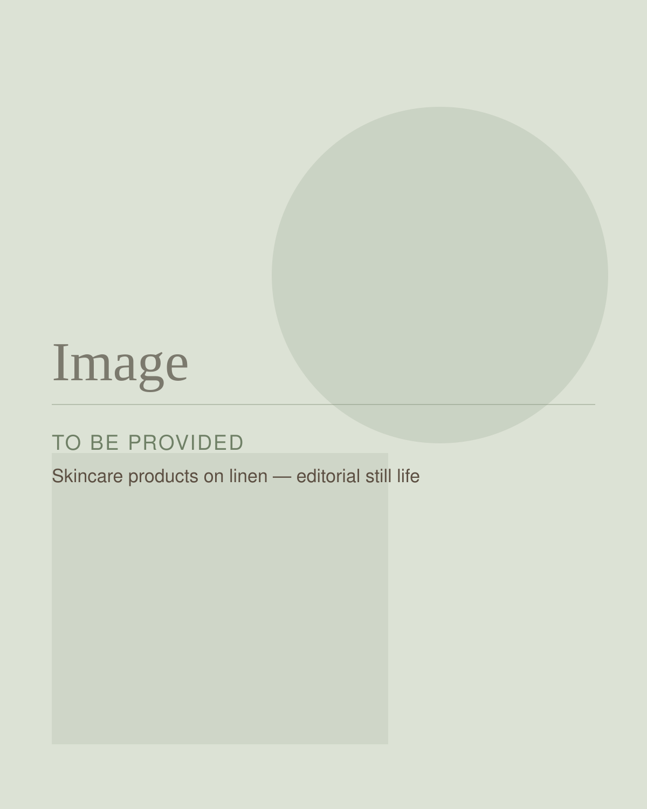

Aesthetics
Chemical Peels With Isabelle Joseph, DNP, NP-BC
Reveal Brighter, Smoother, More Even-Looking Skin
Sometimes even a great skincare routine needs a little help.
If your skin feels dull, uneven, congested, or simply isn't responding the way you'd like to your current routine, a professional chemical peel may help give your skin the reset it needs.
Chemical peels use carefully selected solutions to exfoliate damaged surface layers of the skin and encourage cellular renewal, helping reveal fresher, smoother-looking skin underneath.
Isabelle Joseph, DNP, NP-BC personalizes each treatment based on your skin, your concerns, and your goals—because the right peel isn't the same for everyone. And with concierge care, your treatment comes to you.

Overview
What Is a Chemical Peel?
A chemical peel is a professional skin-resurfacing treatment that uses a carefully selected solution to exfoliate the skin.
Different peel formulations and strengths work at different depths, which means treatment can be customized according to your skin type, concerns, previous treatments, and desired level of correction and downtime.
Rather than simply choosing a peel from a menu, Isabelle evaluates your skin and helps determine which approach is appropriate for you. The goal is controlled exfoliation that supports skin renewal while addressing the concerns that matter most to you.
Who It May Be For
What Can Chemical Peels Help Address?
Hyperpigmentation + Dark Spots
Sun exposure, hormonal changes, inflammation, and previous breakouts can leave areas of unwanted pigmentation behind. Chemical peels may help improve the appearance of certain dark spots, post-inflammatory marks, melasma, and uneven pigmentation by accelerating cellular turnover. Because pigmentation can have different causes—and some skin types require additional precautions—Isabelle will evaluate your skin before recommending treatment.
Acne + Congestion
Clogged pores, breakouts, and lingering post-acne marks can make skin feel difficult to manage. Certain peel formulations may help exfoliate the skin, clear congestion, and support cellular turnover as part of a broader acne-focused skincare plan.
Dullness + Uneven Texture
When dead surface cells accumulate, skin can begin to look dull or feel rough. A chemical peel can remove damaged surface cells and reveal fresher-looking skin underneath, helping improve the appearance of overall tone and texture.
Fine Lines + Visible Signs of Aging
As skin changes with age and environmental exposure, fine lines, uneven texture, and loss of radiance can become more noticeable. Chemical peels may help soften the appearance of superficial fine lines and support smoother, brighter-looking skin.
Not Every Peel Is the Same
Your Skin Determines the Treatment.
Chemical peels aren't one-size-fits-all. Different formulations may contain ingredients such as glycolic, salicylic, mandelic, TCA, or combinations of active ingredients. The appropriate formulation and strength depend on several factors, including your skin type, concerns, treatment history, and goals.
That's why your skin assessment matters. Isabelle will evaluate your skin and determine which available peel option is appropriate rather than choosing treatment based solely on what's trending or what worked for someone else.
Your treatment should fit your skin—not the other way around.

Isabelle's Approach to Chemical Peels
Thoughtful Skin Treatment Starts With Understanding Your Skin
Isabelle's approach to skin health isn't about doing the strongest treatment possible. It's about choosing the right treatment.
Before recommending a chemical peel, Isabelle considers what you're experiencing, what products you're currently using, your previous treatments, your skin type, and what you'd ultimately like to improve. She'll also help you understand what kind of recovery to expect and how a peel fits into your broader skincare plan.
For some patients, that may mean an individual treatment. For others, a planned series of treatments combined with an appropriate at-home routine may make more sense. The plan is personalized to you.
What to Expect
What to Expect From Your Chemical Peel
- Step 1
Skin Assessment
Your appointment begins with an evaluation of your skin, current concerns, skincare routine, relevant medical history, and treatment goals. This helps Isabelle determine whether a chemical peel is appropriate and which available formulation and strength best fit your needs.
- Step 2
Skin Preparation
Your skin will be carefully cleansed and prepared for treatment. Depending on the peel selected and your existing skincare routine, you may also receive instructions to modify certain products before your appointment.
- Step 3
Peel Application
The selected peel solution is applied carefully to the treatment area. The application process and number of layers will depend on the treatment selected. You may experience sensations such as warmth or tingling during treatment.
- Step 4
Recovery + Renewal
What happens afterward depends on the depth of your peel. Some lighter treatments may produce little or no visible peeling, while other peels can result in several days of dryness, flaking, or visible peeling. Your skin may continue to improve after the visible recovery period as the renewal process continues. Isabelle will explain what you can expect from your specific treatment and provide appropriate aftercare instructions.
Will My Skin Actually Peel?
Maybe—and that's completely dependent on the treatment.
One of the biggest misconceptions about chemical peels is that your skin must dramatically peel for the treatment to be effective. That's not necessarily true. Lighter peels may cause minimal or no visible flaking. Other formulations may result in more noticeable peeling for several days.
The amount of visible peeling isn't the measure of whether you received a “good” treatment. The goal is to select an appropriate treatment for your skin and the concern you're trying to address—not to create the most dramatic recovery possible.
How Many Chemical Peels Will I Need?
There isn't one answer for everyone. Some patients may benefit from an individual peel, while others may achieve their goals through a planned series of treatments.
Skin Clique currently offers both individual peels and peel series, with series commonly spaced approximately four to six weeks apart. Isabelle can recommend an appropriate treatment schedule based on your skin, response to treatment, and goals.

Concierge Chemical Peels
Professional Skin Care—Without the Traditional Waiting Room
Your skin treatment doesn't have to mean adding another trip across town to your schedule.
Through her concierge model, Isabelle brings professional aesthetic care directly to you at your home, office, or another appropriate location. You'll receive personalized one-on-one care in a setting designed around your comfort and convenience.
Isabelle is based in South Easton, Massachusetts and serves South Easton and select surrounding communities, including Norwell, Randolph, Somerset, Stoughton, and Westwood.
Is It Right for Me?
Is a Chemical Peel Right for Me?
Chemical peels may be worth exploring if you're concerned about:
- Uneven skin tone
- Sun damage
- Hyperpigmentation or dark spots
- Post-acne marks
- Dullness
- Rough or uneven texture
- Congested pores
- Certain types of acne
- Superficial fine lines
- Overall skin radiance
Chemical peels aren't appropriate for everyone, and not every peel is appropriate for every skin type. Your medical history, current skin condition, medications, skincare products, pregnancy or breastfeeding status, recent procedures, history of cold sores, sun exposure, and other factors may affect whether or how you should be treated. Isabelle will review these considerations before recommending a peel.
Customization matters across skin tones. Chemical peels can be used across a range of skin tones, but selecting the appropriate formulation and treatment depth is especially important. Certain skin types may have a greater risk of unwanted pigment changes following aggressive treatment. Isabelle evaluates your individual skin characteristics and chooses an appropriate approach based on your skin—not a universal treatment protocol.
What to Know
Before Your Chemical Peel
Preparation can be an important part of a successful chemical peel. Before treatment, tell Isabelle about:
- Prescription and over-the-counter skincare products you use
- Retinoids such as tretinoin or retinol
- Acne medications
- Recent aesthetic treatments
- Current medications and supplements
- Allergies
- History of cold sores
- Pregnancy or breastfeeding
- Recent sun exposure or sunburn
- Any active irritation, wounds, or infection
Certain skincare products may need to be temporarily paused before treatment. Do not stop a prescribed medication or prescription skincare product unless instructed by the appropriate medical provider.
Isabelle will provide specific preparation instructions based on the peel selected and your individual skincare regimen.
After Your Chemical Peel
Your aftercare will depend on the depth and formulation of your treatment. In general, your skin may temporarily feel dry, tight, sensitive, or begin to flake.
During recovery, it is especially important to follow the instructions provided by Isabelle, protect your skin from sun exposure, and avoid picking or manually removing peeling skin. Your regular skincare routine may also need to be temporarily modified while your skin recovers. Isabelle will tell you when it's appropriate to restart active ingredients and other products.
Frequently Asked Questions
Chemical Peel Frequently Asked Questions
Have a question you don't see here? Bring it to your consultation, or browse the full FAQ page.
Does a chemical peel hurt?
Most patients experience some degree of warmth, tingling, or stinging while the peel is being applied. The sensation varies depending on the formulation and treatment depth. Isabelle will talk you through what to expect from the peel selected for you.
How much downtime should I expect?
Downtime varies. Some lighter peels may cause little visible peeling, while other treatments may result in approximately three to five days of flaking or peeling. Your expected recovery will be discussed before treatment.
When will I see results?
You may begin noticing improvements as your skin completes the initial recovery process. Skin can continue to look and feel different over the following weeks as renewal continues. Results vary based on the treatment selected, your skin, and the concern being addressed.
How often can I get a chemical peel?
Treatment frequency depends on the type and depth of peel. Some light-to-medium peels may be performed approximately every four to six weeks as part of a treatment series, while deeper treatments require more time between sessions. Isabelle will recommend an appropriate schedule for you.
Can I use retinol or tretinoin before a chemical peel?
Certain retinoids and other active skincare ingredients may need to be temporarily paused before and after treatment. Exactly when you should stop and restart a product depends on what you're using and the peel you're receiving. Follow Isabelle's individualized instructions rather than stopping prescription skincare on your own.
Are chemical peels safe for darker skin tones?
Chemical peels may be appropriate for a variety of skin tones when the formulation and treatment depth are selected carefully. Because the risk of unwanted pigment changes can differ among patients, an individualized skin assessment is important.
Can I get a chemical peel while pregnant or breastfeeding?
Certain chemical peel ingredients may not be recommended during pregnancy or breastfeeding. Tell Isabelle if you are pregnant, breastfeeding, trying to become pregnant, or if your health status has changed so she can determine which options, if any, are appropriate.
Can chemical peels help acne?
Certain chemical peel formulations may be helpful for some patients with clogged pores, acne, or post-acne marks. Acne can have multiple causes, however, so treatment should be individualized. Isabelle can help determine whether a peel, prescription skincare, changes to your home routine, or another approach may be appropriate.
Will a stronger peel give me better results?
Not necessarily. The best peel is the one that appropriately matches your skin, concern, goals, and tolerance for recovery. A stronger treatment isn't automatically a better treatment.
What You Do Between Treatments Matters.
A chemical peel can be an important part of a skin-health plan, but professional treatments are only one piece of the picture. Your everyday skincare routine plays an important role in protecting your skin and supporting your goals between appointments.
Isabelle can help you determine which cleansers, antioxidants, moisturizers, retinoids, pigment-focused products, and sun protection may make sense for your individual skin. If your current routine feels complicated—or simply isn't working—this can also be a good opportunity to simplify it.
Chemical Peel Packages + Group Experiences
For patients who may benefit from multiple treatments, Skin Clique offers chemical peel packages in addition to individual treatments. Rather than deciding in advance that you need a package, start with your skin. Package availability and pricing can change, so ask Isabelle about current Skin Clique options when booking.
Chemical peels may also be available as part of qualifying Skin Clique group experiences. If you're interested in hosting an aesthetic event at your home, office, or another appropriate space, ask Isabelle about current group options and requirements.
Not Sure What Your Skin Needs?
You don't need to arrive knowing which peel, ingredient, or treatment you need. Start with your skin.
Tell Isabelle what you're noticing, what you've tried, and what you'd like to improve. She can help you understand your options and determine whether a chemical peel—or another approach—makes sense for you.
Ready to Reveal Healthier-Looking Skin?
Experience personalized, concierge skin care with Isabelle Joseph, DNP, NP-BC.